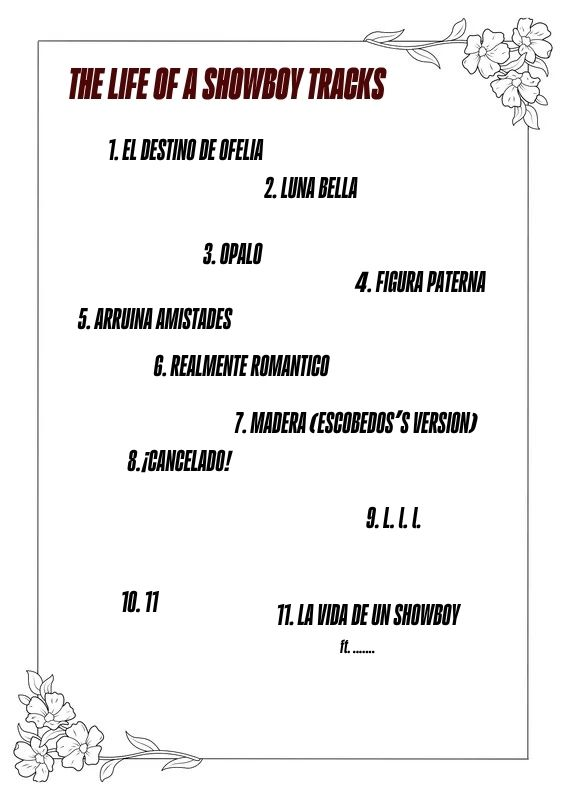

Estimado Bautista:
Te dedico esta breve carta para agredecer tu trato, que ha pesar de haber sido un hijo de puta con vos aún te dignes a hablarme y darme la atención que ni siquiera mis mejores amigos me podrían dar. Yo se que vos sos una persona increible, grasiosa y amigable, sin embargo la forma que tomé de tratarte y dirigirme hacia vos te podrían haber hecho sentir denigrado. Y que ha pesar de todo eso yo te siga intentando hablar cambiando más de número que de gustos amorosos no me mandes al choto cade vez lo aprecio bastante, porque si me pusiera en tus zapatos me mando al pingo y lo acuso con todas las fuerzas policiales
Podría seguir diciendo cosas que no te importan ni aka pero bueno, concluyo diciendote que aún te amo y los más probable es que no deje de hacerlo porque yo se, nose donde, pero tenes algo que nadie más tiene, sos ÚNICO.
Sin nada más que decir, saludos cordiales.
